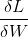

Updating weights in backpropagation algorithm
I think I've understood each step of backpropagation algorithm but the most important one. How do weights get updated? Like at the end of this tutorial? http://home.agh.edu.pl/~vlsi/AI/backp_t_en/backprop.html
Answer
The weight updates are done via the equations written at the last part of the page (Backpropagation) you provided. Let me elaborate a little bit:
New Weights = Old Weights - learning-rate x Partial derivatives of loss function w.r.t. parameters
For a given weight, calculate the  (which can be done easily by back propagating the error) which is nothing but the steepest direction of the function and subtract a scaled version of it, the scale factor being the step size or how large step you want to make in that direction. Just a little clarification which I felt you might need after looking at the way you asked the question ...
What is exactly Back-propagation?
Backpropagation is just a trick to quickly evaluate the partial derivatives of the loss function w.r.t. all weights. It has nothing to do with weight updating. Updating the weights is a part of gradient descent algorithm.